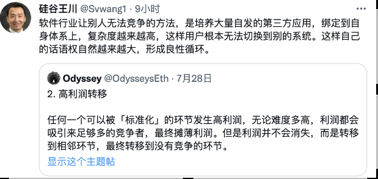
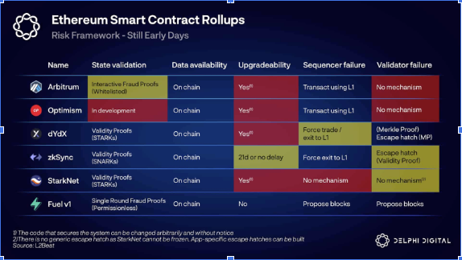
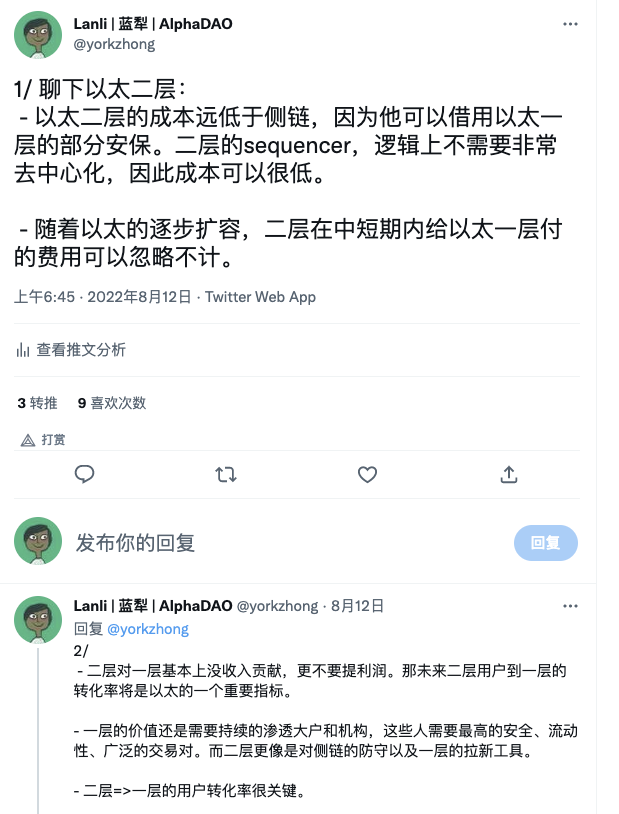
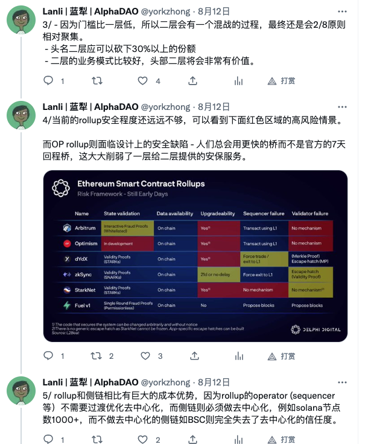

公链的前景是一个值得讨论的问题,因为在极端熊市的情况下这决定了你是否能坚守初心。笔者认为公链有巨大的增长潜力，未来头部公链至少是FANNG的体量 - 和现在比10X涨幅，也许更高。here’s why:
公链的核心是创造了一个”接近永续”、“无审查”、7x24小时、保护私有财产、低税收的交易环境,所以如果你相信自由经济和小政府，那么公链这种set up是非常符合长期经济增长的模式的。就拿“低税收”来比较一下(政府收入as % of GDP)：
- 中国： 25.6%
- 美国：17%
- 以太：0.15%
设想一下，如果有这样一个现实国家，而且可以容纳无限多的人，那么是否世界上所有的富人都希望进去。最低限度，公链创造了一个全球最大的自由贸易区，可以想象这个自由贸易区未来的潜力有多大 - 以前的香港 x n。
疑问1，公链都是内部应用为主，不具备外部性：
公链已经在defi领域证明了自己。这一轮币圈去杠杆，实际上蓝筹defi基本上没出大的问题，而出现问题的大部分是cefi。当然defi也有自己的问题，最大的问题就是1/ 黑客猖獗 2/项目方作恶频繁。但这些问题随着技术的发展和竞争都会逐渐被解决。从进化论的角度，defi使用了个体的脆弱性（用户和协议）保证了整体的反脆弱。即使ust，也基本上是给算稳的创新画了一个句号（也许在另一个元宇宙里，ust没有那么aggressive并且成功了，那会怎样？）。说到外部性，nft是外部性的第一轮尝试，目前比较热的gamefi也算，而未来“token 表达万物价值”将会逐步的找到它的适应领域，逐步发展处更好的外部性。
疑问2，从互联网的发展角度，价值总是在基础设施 ->应用之间来回切换的，公链是否会有一天价值转移到应用上？
例如： 那么问题来了，以太是否会成为电信公司、cisco从而逐渐价值被转移走呢？用上面的标准，核心在于标准化和转换成本。那我们要问一个问题，用户从公链A转到公链B容易吗？看起来非常容易，但叠加了1/ 生态的完整度和靠谱性 2/ 公链本身常年积累的靠谱性，我认为至少比电信公司和cisco要难。为何？电信公司和用户的接口是完全标准化的（modem、wifi、4G/5G），而生态和电信公司的接口也是标准化的（IDC，后来是云），所以可替代性很强。Cisco的问题是市场容量到头了，而且cisco也不具备一个庞大的生态体系。所以我的判断是，公链尤其是以太，更像是苹果，在很长时间内能够保持价值链的优势地位。
这个话题比较大而且见仁见智，这里简单说下。
问题1：以太未来是否能保持比较大的份额
根据“大猩猩投资原则”，在市场内领先的“大猩猩公司“有很强的的战略优势，地位很难被动摇。大猩猩公司完全可以采用后发制人的方式，而让其他公司去试错。举个例子，以太在看到celestia的技术后，改变了他的分片模式，而改为danksharding。 danksharding里面用到了celestia的关键技术DAS，而以太在celestia的DAS基础上又加了一些新的设计，将其补充的更完整。笔者认为以太具备了”大猩猩“的地位，所以未来至少能占据比较大的份额。问题2：会不会有第二个竞争的平台(安卓)？
这个世界很多平台性质的东西都是双寡头垄断的，例如宗教（西方以基督教、穆斯林，中国是佛道）、国家（美国平台和正在形成的中/俄平台）、手机（苹果和安卓）、芯片(Intel, 英伟达)。所以未来不排除出现第二个比较强的公链平台体系，因为如前面所说，这个市场太大了。反而市场如果小一点，更偏向单平台，例如美国的电商、搜索等。我对这个问题目前呈开放态度，但暂时没明显的第二个竞争平台，例如：
- Solana本来挺好的，现在出了aptos和solana抢钱、生态。另外技术实在是不牢靠，没法获得用户信任。从长期而言，solana盈利模式还没有。
- BSC的本质还是太中心化，不被西方主流接受，而在中国禁掉了数字货币之后，新韭菜增长有限。但BSC背靠币安，与cex有很强的协同效应。BSC也可以认为是CEX”大猩猩“拓展自己优势的一个例子。
- Cosmos：Luna在的时候，Luna/ cosmos的情况是：有钱、有技术、有生态。但是当luna负螺旋以后，cosmos剩下的就只有技术，已经不是威胁最大的竞争者了。但是celestia值得关注。
- Avax的技术成熟度远低，subnet的搭建非常粗糙。但在Luna/Sol出问题时，是唯一挺着的这一轮头部alt-1了。
- Dot/ Near: 技术上比Avax要领先，但是这一轮牛市有点晚，没有彪起来。而下一轮也许就没人关注了，市场永远喜新厌旧。
- 基于闪电网络的RGB值得关注，因为BTC是另一个赛道的”大猩猩“，看它能否将其能力渗透到智能合约这个领域
综合以上，如果排优先级的话，BSC/ RGB第一级别，Cosmos(Celestia)/Avax/ Sol第三级别，其他的认为成为”安卓“的机会不大。
所以，对于”第二个竞争性平台“的观点是：持续观察市场动态，在出现明显的趋势时可以适当配置仓位。当然，这个可以根据不同的人的risk preference来决定。
问题3：其他公链如何？
除了潜在的第二个竞争性平台之外，其他的公链最好结果是长尾公链，满足特定细分市场的比较特殊的需求，增值潜力比较有限。
首先我们定义什么是公链，这里认为：公链是承载区块链经济的核心基础设施。从某种角度上说，公链和一个国家很像。
对于一个公链来说，有很多考量点：
- 去中心化程度
- 安全性
- 经济体量和经济可持续性
- 速度/gas fee（这两者往往相关）
- 投资者、生态、用户接受程度
- 代币分配
这里重点说下去中心化程度和tps这两个角度。随着BSC、polygon等新公链的热度提升，一度情况下很多人认为“去中心化”程度没那么重要。但这里给“去中心化程度“仍然打一个很高的权重，主要从可持续角度，去中心化的公链在经济可持续的情况下，可以提供一个近乎永续的环境，即使这个环境有所改变，也必须符合大多数人的意愿，而中心化区块链则受限于管理者自己的想法，大概率是有一定存续期的。
对于资产存储以及公链上的应用来说，这个环境是否永续很关键。
Tps这个其实不用多说，现在的以太15 tps，merge之后大约12tps，在当下熊市情况下每笔transaction 费用还算不高，但是没法支撑任何一次牛市。
可持续性也很关键，因为不管是一个国家还是一个公链是没法长期赤字运行的。赤字运行意味着需要增发，也就是借未来的钱来负担当下的费用。目前公链暂时只有以太和BSC具备可持续性，所以暂不为重点考量。
安全性则是资产的安全性，这个不用多说非常重要。安全性和去中心化程度又有关联，另外也和本币的体量以及POS/POW机制相关。
所以我们将一个公链的核心考量暂定为：
去中心化程度
Tps以及未来的tps
安全程度
总结：
以太正在研发下一代的Enshrined rollup, 这个机制将把ZK rollup直接嵌入一层，所以从外面看可以简单理解为ZK rollup的性能，但是在一层执行，而且这个未来支持64分片。Enshrined rollup如果实现也许是公链的终极形态。
Merge:
Merge将改变以太的成本侧，大幅降低成本，以太可能会成为第一个盈利的公链）。另外以太将是第一个可以用PE估值的区块链，PE在当前价格下大约100X。
Merge还有一个好处就是将steth变成一个类似国债的资产，而华尔街对债务类资产非常熟悉
Merge目前推上争论最多的是POW爱好者认为POW不如POS，这里笔者的观点如下：
- POS好处：
最大的好处是降低了安保成本。逻辑很简单：金融所需要的回报少于实业。steth相当于以太的国债，而POW则相当于一个实体生意。相比之下，美国国债回报率大约3%，而实体的wacc (最低回报率）大约是10%。
第二个好处就是上面说的创造了一个债券资产，在这个资产回报的吸引下，可以引入大量的资本进入steth，从而大大增强了以太的安全性（steth市值变大）。
- POS坏处：
POW的好处是安保和区块链本网有一定的隔离性，所以”反身性“烧差或者稍有延时。而POS则安保和区块链一体，反身性较强。举个例子，luna和fantom，在币价下跌的时候，区块链的安全程度也大幅de下降。而BTC如果币价下跌，安全程度（算力）的下降则有很大延迟。但归根结底，POW也是有反身性的。
Rollup：
Rollups 显着降低了许多以太坊用户的费用：Optimism 和 Arbitrum 经常提供比以太坊基础层本身低约 3-8 倍的费用，而具有更好的数据压缩并且可以避免包含签名的 ZK rollups 的费用约为 40-比基础层低 100 倍。但目前opti和arbi的费用仍然比竞争的alt-1要高，所以需要进一步降低费用。
EIP4488：
时间大约是Merge之后的下一次升级（上海硬分叉，估计2023年）。4488给以太带来的改变包括：EIP 4488的主要针对对象是二层，对1层的交易无影响（或者没有正面影响）
EIP 4488的变化是增加了“blob”，这里的理解是专用的数据分区。
Calldata gas costs have been reduced from 16 to 3 gas per byte，也就是说二层rollup和call data相关的成本降低到现在的⅕
EIP 4844（预览版danksharding）:
和Danksharding相比，EIP4488尚未实现数据抽样。时间是4488之后半年，所以预计是2023年下半年，或者2024年初。，这个过程也许是持续的而不是一次搞定的。danksharding的影响：blob带宽为83kB (目前以太call data带宽为10kb)，所以是8X倍扩容。
Danksharding:
逻辑上danksharding用抽样技术，是可以接近无限切片或者扩容的。Blob带宽1.3M，也就是和当下比是130X。Danksharding的争论：这篇文章认为danksharding是over kill, EIP4844就可以搞定了。因为EIP 4844将call data成本降低了100X，而二层的计算这时也许是瓶颈了（参见奥德赛期间gas fee倒挂事件）。如果进展到danksharding，那么call-data成本将会降低到太低从而容纳很多垃圾交易，而似乎为这些垃圾交易不值得付出danksharding巨大的复杂性（PBS, crList, DAS等等）。
这里的核心内容是，如果单链，那么即使被51%攻击，第一资产本身不会凭空消失，而只会以虚假交易或者交易取消的方式存在，比如把你的以太换成USDC，或者取消了你以太换USDC的交易。第二，51%攻击仍然可以被social fork roll back
如果跨链，那么在A链确认跨链交易之后，B链51%攻击后回滚，就会出现双花(A链确认，同时B链又没花）。
二层的安全性评估：
Opti用7天校验回滚机制（7天争议期，如果确认有问题则修正问题交易），ZK用当场校验的方式。所以，在以太体系内的交易，都是可以通过一层保证的。但是，结合上面V神的文章，如果这Opti二层通过跨链和以太外发生链接（包括侧链和CEX)，则二层实际上无法保证安全。例如：
- 二层valiadtor作恶，插入错误交易，给自己转了100eth
- 这100eth通过hop等非官方桥转到侧链或者cex
- 这时，即使发现了这个错误，以太对二层进行回滚等错误修正，双花仍然已经发生。

这篇文章很重要
二层的定位

二层的多种形式和比较：
Delphy Digital的这篇文章介绍的比较齐全。二层的价值捕获：
当前Arbitrum的大部分收入都贡献给了1层，毛利率大约20%。但是随着以上4488、4844的进展，calldata成本将以百倍幅度降低，二层的一层部分成本将大幅降低到可忽略不计，二层的毛利率可以提升。当一层成本不成为二层的主要成本时，一层的利润将主要来自供需。如果二层有足够多、足够好的用户的话，二层的收入逻辑上不一定会比以太一层低 （例如假设用户是一层10X，气费是一层1/10，那么二层收入 = 一层）。
二层的未来格局：
这里认为以太的二层会是一个非常集中的，至少在defi领域。一种可能性是defi 1-2个，nft/ game 1个(IMX?)，隐私1个(Zcash?)。逻辑是网络效应和先发优势，如果某一个二层能在未来2年左右迅速拉开身位，那么后来者要追上来会很难。按照优先级这里如此建议：
- Arbitrum
- OP
- ZKsync/li>
- AZtech
- IMX?
ZK rollup
目前多个ZK发布主网上线时间，比较值得期待：- ZKsync说还有100天（3个月，所以大约是10月份）
- Polygon 的ZKEVM目标Q3 2022上线
- Starknet还没看到主网发布时间
V神最新文章把ZKEVM做了以下分类：
- Type 1 (fully Ethereum-equivalent）: The Privacy and Scaling Explorations team ZK-EVM effort is building a Type 1 ZK-EVM.
- Type 2 (fully EVM-equivalent)：Scroll 的 ZK-EVM 项目正朝着 Type 2 ZK-EVM 方向发展， Polygon Hermez 。 也就是说，这两个项目都还没有完成。 特别是，许多更复杂的预编译还没有实现。 因此，目前这两个项目都被更好地考虑为 Type 3 。
- Type 2.5 型（EVM 等效，gas 成本除外）：
- Type 3（几乎等效于 EVM）:Scroll 和 Polygon 在其当前形式中都是 Type 3，尽管它们有望随着时间的推移提高兼容性。 Polygon 有一个独特的设计，他们正在 ZK 验证他们自己的称为 zkASM ，并且他们使用 zkASM 实现来解释 ZK-EVM 代码。 尽管有这个实现细节，但我仍将其称为真正的 Type 3 ZK-EVM； 它仍然可以验证 EVM 代码，它只是使用一些不同的内部逻辑来完成它。今天，没有 ZK-EVM 团队 想 成为 Type 3； Type 3 只是一个过渡阶段，直到完成添加预编译的复杂工作并且项目可以移动到 Type 2.5。 然而，在未来，Type 1 或 Type 2 ZK-EVM 可能会自愿成为 Type 3 ZK-EVM，方法是添加 新 的 ZK-SNARK 友好型预编译，为开发人员提供低验证时间和 gas 成本的功能。
- Type 4（高级语言等效）:ZKSync 是一个 Type 4 系统，尽管随着时间的推移它可能会增加对 EVM 字节码的兼容性。 Nethermind 的 Warp 项目正在构建一个从 Solidity 到 Starkware 的 Cairo 的编译器，这将把 StarkNet 变成事实上的 Type 4 系统。
V神认为：就我个人而言，我希望随着时间的推移，通过 ZK-EVM 的改进和以太坊本身的改进相结合，使其对 ZK-SNARK 更加友好，一切都将成为 Type 1。
评价：ZK-EVM任重道远，这样看OP方案在未来2-3年也许会是主流- Celesti研究及未来公链
- Celestia量子重力桥及对公链格局的影响
对于Celestia，笔者认为可以保持关注。模块化公链是目前行业的主要共识，而celestia是除了以太外在这个领域声量最大的。但是celestia毕竟比较新，而且有几个挑战：
- 冷启动问题（市值 vs.安全性）
- 如果celestia真的这么便宜（可以理解和danksharding相比较），那么上面的交易费也许太便宜，会承载过多垃圾交易？
- 貌似也没解决前面说的跨桥双花问题
- 市值也许太大，风险回报比有限
- 价值捕获不够，DA费用太便宜（以太的DA在很长时间也会很便宜）
“为了让以太坊开始对任何对 DA 有意义的东西收费，你需要超过 1.3 MB/s（假设当前的 danksharding 规范）需要最高安全性的实际有价值的数据。 即使您达到 1.3 MB/s，溢出也可以转移到其他地方。 Celestia、DataLayr、DAC、Adamantiums、Polygon Avail 等替代品将提供 大量 廉价的 DA。 只有最安全的交易才需要完整的以太坊安全性。 此外，DA 吞吐量可以安全地增加（使用更多验证器），因此 1.3 MB/s 不是基本限制。我相信 至少在 几年内，与以太坊等强大的结算层相比，DA 费用收入将微不足道。” - Delphi Digital
以太就是房间里的大象，所以它的进度对整个行业都会产生影响。从上面看：- Merge Q3
- 4488 2023年
- ZK Q3
所以在2023年的时候，如果ZK的技术靠谱的话，基于以太的ZK rollup应该非常能打了。这个时候对于新的侧链基本上是碾压式的优势。所以对于侧链这里有几个建议:
- 主要看头部侧链
- 对于新侧链，必须和以太提供非常不同的value proposation，例如隐私
if
then
else
html
lalal